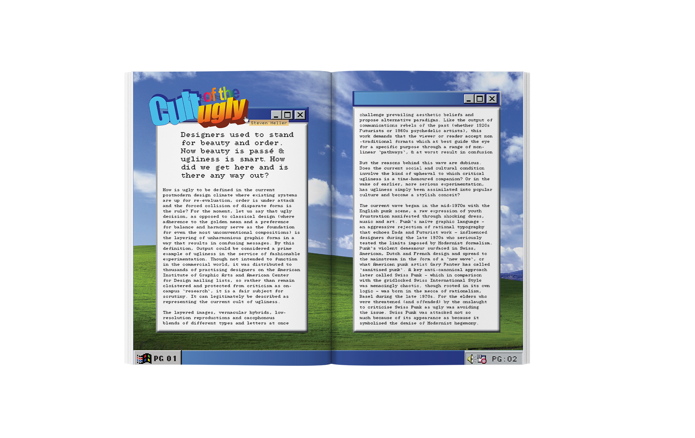

Cyber Blobism
With an amalgamation of typography and imagery, Cyber Blobism is a book that strives to concretise cyberspace while commenting on the retro-futuristic style of early 2000s interfaces.
My aim is to translate digital into print since most of my work usually does the opposite. It combines 90s-2000s Windows and Macintosh's styles along with an experimental interface inspired by the cyber style of that era.